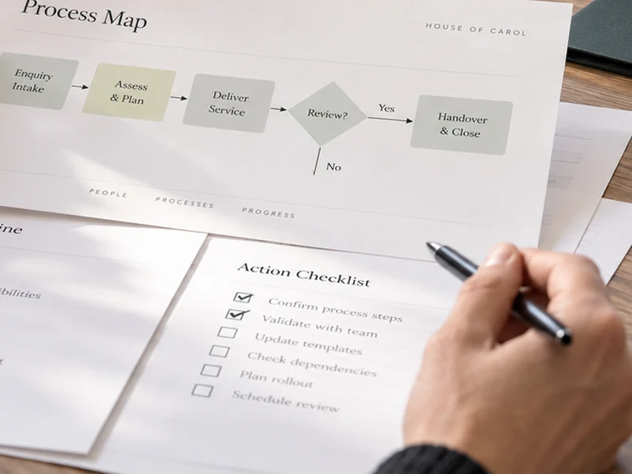

SOP & Process Design Sprint
For: SMEs and charities
Price: £1,500 fixed fee
Turn an important business process into a clear, workable and maintainable operating method.

9 services
Make everyday work clearer, more reliable and easier to manage.
Choose a service to see who it is for, what you receive, how it works, pricing information and important boundaries.
For: SMEs and charities
Price: £1,500 fixed fee
Turn an important business process into a clear, workable and maintainable operating method.
For: SMEs and charities
Price: £1,250 fixed fee
Create a simpler, controlled information structure that improves retrieval and reduces duplication.
For: SMEs
Price: £1,250 fixed
Define a small set of useful measures and a practical reporting structure tied to real decisions.

For: Service businesses
Price: £1,250 fixed fee
Map the end-to-end customer journey, identify operational friction and service failures, and show where the journey could become clearer and more effective without removing necessary business controls.
For: SMEs with support activity
Price: £1,750 standard — indicative scope band £1,250–£2,500. Final project fee depends on the agreed knowledge-base scope.
Create a structured, maintainable support knowledge base with clear escalation and ownership.
For: Small organisations
Price: £1,750 standard — indicative scope band £1,250–£2,500. Final price is confirmed after the agreed continuity scope and dependencies are checked.
Create a proportionate continuity baseline around critical services, dependencies, fallback and recovery.
For: SMEs and charities
Price: £1,250 standard; indicative scope band £950–£1,750. Final price is confirmed after scope fit and before commitment.
Clarify who decides what, how matters escalate and which governance routines add value.
For: SMEs and charities
Price: £1,500 standard — indicative scope band £1,000–£2,250. Final price is confirmed after scope fit.
Create a fair, traceable complaints process that separates intake, investigation, response, remedy and learning.

For: SMEs and charities publishing factual or performance claims
Price: £1,000 standard — indicative scope band £750–£1,500. Final price is confirmed after the claim classes and review unit are agreed.
Challenge objective claims against available evidence and identify corrections or qualifications before release.
Not sure which service fits?
Tell us what is happening and what a useful result would look like.
Discuss the outcome you need